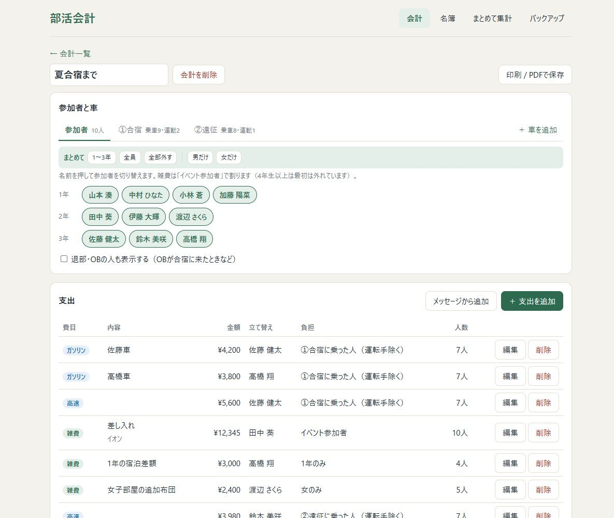
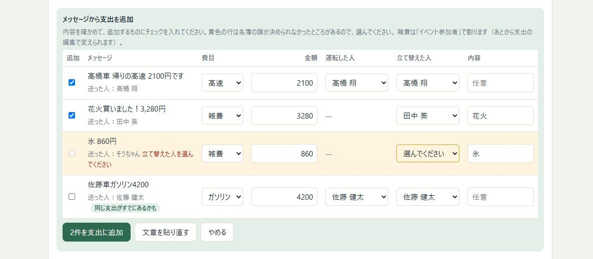
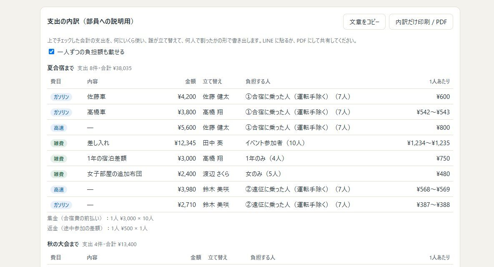
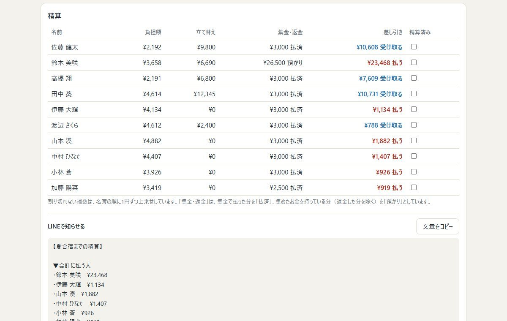
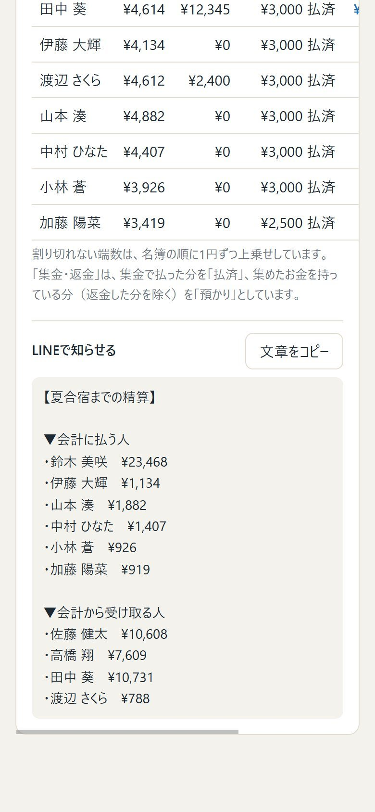

Web · React · TypeScript · Claude API
部活会計
所属するソフトテニス部で会計係をしていたときに、Excel で手計算していた「立て替え → 割り勘 → 精算」を置き換えるために作った Web アプリです。 車ごとの高速代・ガソリン代は運転手を除いた人数で割る、4年生以上は最初は参加者に入れない、といった部の実際のルールをそのまま組み込み、 引退後も後輩が使い続けられるように整えました。





FEATURES
- 名簿 — 毎年の継続届（Excel）を読み込むと、学籍番号で照合して学年の更新・新入部員の追加・卒業生の OB 化をまとめて行う
- 割り勘 — 高速・ガソリンは車ごとに「乗った人 − 運転手」で、雑費はイベント参加者で割る。学年・性別での絞り込みや個別指定、端数の配分も自動
- AI で入力 — LINE のメッセージを貼ると Claude が支出ごとに分け、名簿・車と照らし合わせてから追加。レシート画像は金額を読み取って支出に結びつける
- 精算と共有 — 集金・返金も含めて一人ずつの過不足を計算し、LINE 用の文章・PDF で共有。精算済みのチェック、複数の会計のまとめて集計にも対応
- 引き継ぎ — バックアップファイルで次の会計係へ。書き出し忘れは画面で知らせる
POINTS
サーバーを持たない
部員の名前やお金の記録を外に置かないよう、データはブラウザの中だけに保存。GitHub Pages に置くだけで動くので、引退後も維持費や管理者が要らない。
AI には「下書き」だけさせる
お金の記録なので、AI の読み取り結果は必ず確認画面を通す。名前は AI に推測させず、アプリ側で名簿と照合し、決まらないところだけ人が選ぶ。
実際の使い方から削る
部の運用を聞きながら作り直し、使わない「日付」「部費から払う」などの項目は削除。レシートから支出を自動で作る機能も、間違いのもとになるため金額照合だけに絞った。
計算をテストで守る
割り勘・精算・データ移行・メッセージの照合などを 60 項目の自動チェックで確認し、画面はヘッドレスブラウザで操作して確かめながら変更した。
TECH
- React 18 + TypeScript（Vite）、GitHub Actions で GitHub Pages に自動デプロイ
- Claude API（Messages API の tool use で決まった形の JSON を返させる）をブラウザから直接呼び出し
- read-excel-file で継続届の .xlsx を読み込み、localStorage に保存